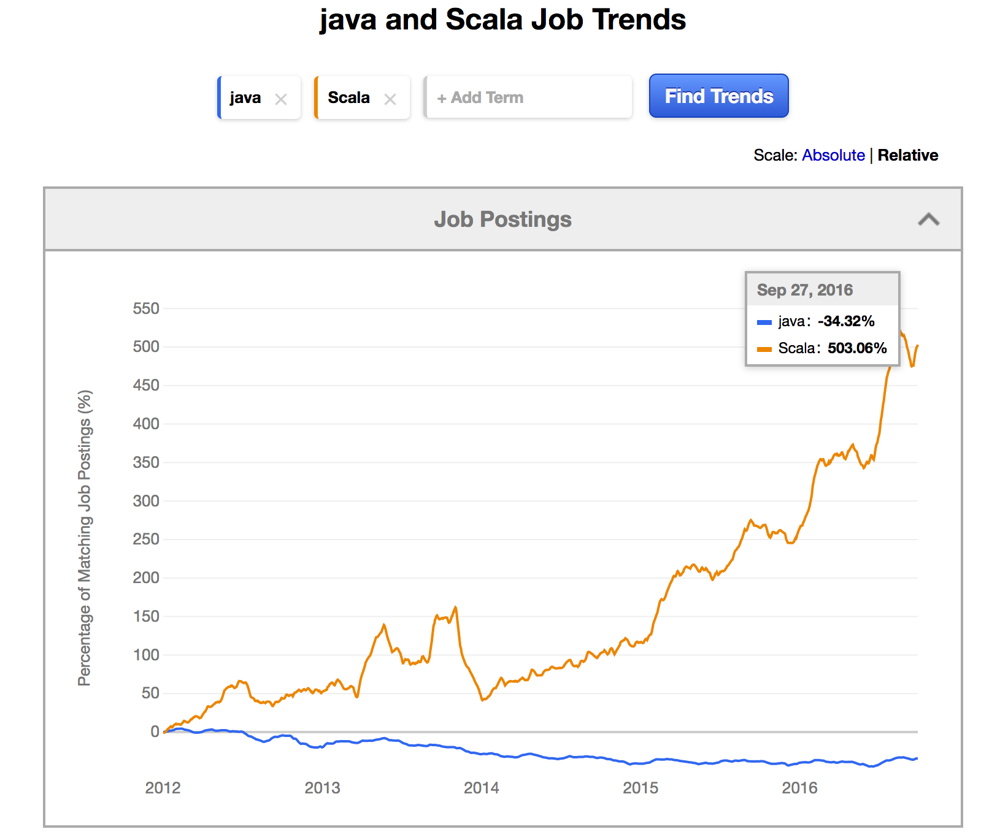

TCD Functional Programming
Scala Module
December 2016
Created by roland@tritsch.org / @innolocity
Roland
- Degree in Computer Science (Software Engineering), FH Darmstadt
- Languages: Pascal, C++, Eiffel, Java, Clojure, Scala, Go, ...
- Databases: Ingres, ObjectStore, Versant, Postgres, Voldemort, MungoDB, ...
- Distributed Systems: IDL/IIOP, WSDL/SOAP, REST/JSON, ...
- Companies: EDS, ObjectDesign, Versant, IONA, Gilt, Nitro, ...

Today
- Not an introduction to Functional Programming :)
- Scala vs. Scalaz vs. Cats
- Scala vs. Haskell vs. Clojure vs. ...
Why Scala?
Why Scala?
Why Scala?

Why Scala?
Scala for Java Programmers
vs.
Scala for Haskell Programmers
- Immutability (Datastructures, Objects, ...)
- (Side effect free) Functions (to create more testable, stateless designs)
- Java interoperability (the good, the bad, the ugly)
- Learning curve (for Java Programmers)
Today - Scala!
- Data Types, Data Structures, Collections, ... (15 mins)
- Control Structures, ... (15 mins)
- Functions, Compositions, ... (15 mins)
- Java interoperability, ... (15 mins)
- Fibonacci, Josephus Problem, ... (30 mins)
Fiddle
Fiddle - Done
Data
Data - Done
Control
Control - Done
Function
Function - Done
Fibonacci
Fibonacci
Fibonacci - Done
Josephus
People are standing in a circle waiting to be executed. Counting begins at a specified point in the circle and proceeds around the circle in a specified direction. After a specified number of people are skipped, the next person is executed. The procedure is repeated with the remaining people, starting with the next person, going in the same direction and skipping the same number of people, until only one person remains, and is freed.
The problem — given the number of people, starting point, direction, and number to be skipped — is to choose the position in the initial circle to avoid execution.
Josephus
Josephus - Done
AMA
- Scala
- Career, Jobs, Money, ...
- Market, Trends, ..., Dublin, SF, NY, Berlin, ...
- Software Engineering, Machine Learning, Blockchain Technology, ...
- ???
Resources
- https://www.scala-lang.org
- https://scalafiddle.io
- 99 Scala Problems
- Scala for the impatient
- Functional Programming Principles in Scala